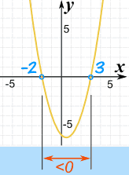
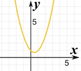
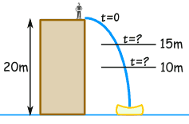
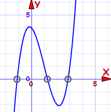

Solving Quadratic Inequalities
... and more ...
Quadratic
A Quadratic Equation (in Standard Form) looks like:

A Quadratic Equation in Standard Form
(a, b, and c can have any value, except that a can't be 0.)
The above is an equation (=) but sometimes we need to solve inequalities like these:
|
Symbol
|
Words
|
Example
|
||
|---|---|---|---|---|
|
>
|
greater than
|
x2 + 3x > 2
|
||
|
<
|
less than
|
7x2 < 28
|
||
|
≥
|
greater than or equal to
|
5 ≥ x2 − x
|
||
|
≤
|
less than or equal to
|
2y2 + 1 ≤ 7y
|
||
Solving
Solving inequalities is very like solving equations ... we do most of the same things.
| When solving equations we try to find points,
such as the ones marked "=0" |
 |
| But when we solve inequalities
we try to find interval(s),
such as the ones marked ">0" or "<0" |
So this is what we do:
- find the "=0" points
- in between the "=0" points, are intervals that are either
- greater than zero (>0), or
- less than zero (<0)
- then pick a test value to find out which it is (>0 or <0)
Here is an example:
Example: x2 − x − 6 < 0
x2 − x − 6 has these simple factors (because I wanted to make it easy!):
(x+2)(x−3) < 0
Firstly, let us find where it is equal to zero:
(x+2)(x−3) = 0
It is equal to zero when x = −2 or x = +3
because when x = −2, then (x+2) is zero
or
when x = +3, then (x−3) is zero
So between −2 and +3, the function will either be
- always greater than zero, or
- always less than zero
We don't know which ... yet!
Let's pick a value in-between and test it:
So between −2 and +3, the function is less than zero.
And that is the region we want, so...
x2 − x − 6 < 0 in the interval (−2, 3)
Note: x2 − x − 6 > 0 on the interval (−∞,−2) and (3, +∞)
|
And here is the plot of x2 − x − 6:
|
 |
Also try the Inequality Grapher.
What If It Doesn't Go Through Zero?
|  |
Here is the plot of x2 − x + 1 There are no "=0" points! But that makes things easier! |
|
Because the line does not cross through y=0, it must be either:
So all we have to do is test one value (say x=0) to see if it is above or below. |
|
A "Real World" Example
A stuntman will jump off a 20 m building.
A high-speed camera is ready to film him between 15 m and 10 m above the ground.
When should the camera film him?
We can use this formula for distance and time:
d = 20 − 5t2
- d = distance above ground (m), and
- t = time from jump (seconds)
(Note: if you are curious about the formula, it is simplified from d = d0 + v0t + ½a0t2 , where d0=20, v0=0, and a0=−9.81, the acceleration due to gravity.)
OK, let's go.
First, let us sketch the question:

The distance we want is from 10 m to 15 m:
10 < d < 15
And we know the formula for d:
10 < 20 − 5t2 < 15
Now let's solve it!
First, let's subtract 20 from both sides:
−10 < −5t2 <−5
Now multiply both sides by −(1/5). But because we are multiplying by a negative number, the inequalities will change direction ... read Solving Inequalities to see why.
2 > t2 > 1
To be neat, the smaller number should be on the left, and the larger on the right. So let's swap them over (and make sure the inequalities still point correctly):
1 < t2 < 2
Lastly, we can safely take square roots, since all values are greater then zero:
√1 < t < √2
We can tell the film crew:
"Film from 1.0 to 1.4 seconds after jumping"
Higher Than Quadratic
The same ideas can help us solve more complicated inequalities:
Example: x3 + 4 ≥ 3x2 + x
First, let's put it in standard form:
x3 − 3x2 − x + 4 ≥ 0
This is a cubic equation (the highest exponent is a cube, i.e. x3), and is hard to solve, so let us graph it instead:

The zero points are approximately:
- −1.1
- 1.3
- 2.9
And from the graph we can see the intervals where it is greater than (or equal to) zero:
- From −1.1 to 1.3, and
- From 2.9 on
In interval notation we can write:
Approximately: [−1.1, 1.3] U [2.9, +∞)